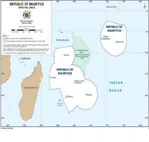
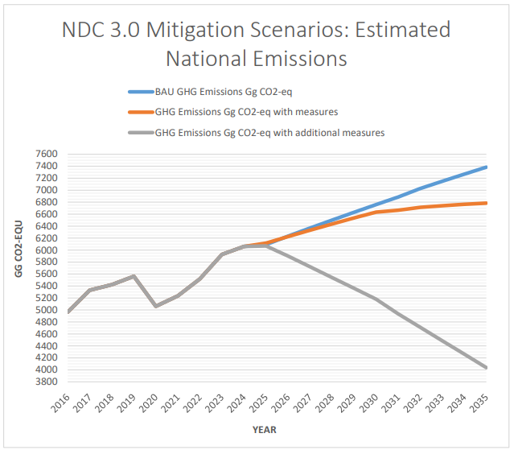

The Third Nationally Determined Contribution (NDC 3.0)
of the Republic of Mauritius
September 2025
AFOLU Agriculture, Forestry and Other Land Use
BAU Business As Usual
BTR Biennial Transparency Report
CCA Climate Change Act
CCC Climate Change Committee
CDT Commercial Distributive Trade
COP Conference of the Parties
DCC Department of Climate Change
DRR Disaster Risk Reduction
EDB Economic Development Board
EEZ Exclusive Economic Zone
EPR Extended Producer Responsibility
ESG Environmental Social Governance
GCF Green Climate Fund
GEF Global Environment Facility
GHG Greenhouse gases
GST Global Stocktake
HFC Hydrofluorocarbons
IMCCC Inter-Ministerial Council on Climate Change
IPDM Integrated Pest and Disease Management
IPPU Industrial Processes and Product Use
IWPF Integrated Waste Processing Facilities
LDC Least Developed Countries
LULUCF Land use, Land-Use Change and Forestry
MOESWMCC Ministry of Environment, Solid Waste Management & Climate Change MPA Mauritius Ports Authority
NAMA Nationally Appropriate Mitigation Actions
NAP National Adaptation Plan
NCCMSAP National Climate Change Mitigation Strategy and Action Plan NID National Inventory Document
PPP Public Private Partnership
RCP Regional Climate Projection
RE Renewable Energy
RoM Republic of Mauritius
SIDS Small Island Developing State
tCO2e Tons of carbon dioxide equivalent
UNDC AP Updated Nationally Determined Contribution Action Plan UNFCCC United Nations Framework Convention on Climate Change
The Republic of Mauritius, responsible for only 0.01% of global greenhouse gas (GHG) emissions, remains firmly committed to the Paris Agreement and the global goal of limiting temperature rise to 1.5°C. Through its Third Nationally Determined Contribution (NDC) 3.0, Mauritius enhances its climate ambition, reflecting its unique circumstances as a Small Island Developing State (SIDS). This submission recognizes the insufficient global progress highlighted in the first Global Stocktake (GST) and underscores the urgency for accelerated action, enhanced resilience and strengthened international support.
Mauritius' geographic and socio-economic characteristics heighten its vulnerability to climate change. With a land area of just 2,040 km² but an Exclusive Economic Zone (EEZ) spanning 2.3 million km², the island faces sea-level rise, coastal erosion, biodiversity loss and more frequent tropical cyclones. Climate projections indicate a 13% decline in rainfall by 2050 and a potential temperature rise of up to 2.5°C by 2100 with increases in extreme heat days and droughts. Climate- related shocks already impose recurring economic costs, affecting critical sectors including agriculture, fisheries, tourism, health, infrastructure and disproportionately impacting vulnerable communities.
Mitigation efforts under the NDC 3.0 aim for a 40% reduction in economy-wide GHG emissions by 2035, relative to business-as-usual scenarios. The energy sector, responsible for over 75% of emissions, is the primary focus. Key priorities include achieving 60% renewable energy in electricity production by 2035, phasing out coal, expanding sugarcane biomass, scaling up solar and wind and piloting Ocean Thermal Energy Conversion. In 2024, renewables accounted for only 18% of electricity generation, highlighting challenges related to capital investment, grid capacity and land availability.
The transport sector as the largest consumer of energy will gradually shift towards electrified public buses, light railway system will be powered increasingly by photovoltaics, adaptive traffic control systems and fiscal measures will aim to curb emissions. Parallel decarbonisation efforts targeting the manufacturing, port and aviation sectors through innovative finance and international partnerships will ensure energy efficiency and transition to low-carbon solutions. Aviation and shipping will advance decarbonisation via digitalisation, efficiency improvements, sustainable fuels and circular economy approaches. However, progress will depend on external support.
The waste sector, contributing to over 10% of emissions, will be transformed through the development of two integrated waste processing facilities by 2029, anaerobic digestion, energy recovery from landfill gas and enhanced recycling. Emission from the Refrigeration and Air- Conditioning (RAC) sector will be addressed under the Kigali Implementation Plan through the phasedown of HFCs. Agriculture, while a minor emitter, remains central to food security and there is a need for increased resilience. Measures include reduced fertiliser use, composting, biogas integration and sustainable livestock management. Forests and mangroves, as critical carbon sinks will undergo restoration and propagation for biodiversity conservation. Complementing these efforts, the national circular economy roadmap will embed circular practices across agriculture, construction, consumer goods and mobility.
The ocean economy is a strategic asset for both mitigation and adaptation. Mauritius has launched a Carbon Sink Enhancement Programme with the objective to carry out inventories on seagrass and mangrove in the whole Exclusive Economic Zone (EEZ) of Mauritius by 2035, operationalize blue carbon accounting in national climate reporting and restore degraded ecosystems, supported by a Blue Carbon Innovation Hub by 2028. Coastal resilience efforts are critical, with over 37 kilometres of shoreline already eroded. Thirty-three priority sites will be rehabilitated by 2035 using protective infrastructure and nature-based solutions, including mangrove and coral reef restoration.
Adaptation is a cornerstone of NDC 3.0. Water, coastal zone management, tourism, infrastructure, agriculture and food systems, terrestrial ecosystem and biodiversity, fisheries and marine ecosystem and health and livelihoods are increasingly impacted by climate change. Rainfall is projected to decline by 13% by the mid-century, with more frequent droughts that will necessitate aquifer protection, improved water-use efficiency and expanded water storage. Agriculture and food systems, which are under stress from shifting rainfall patterns, temperature rise, droughts and cyclones will necessitate climate smart agricultural practices, including smart irrigation, integrated pest control management and agroforestry. Fisheries management will entail sustainable and climate-smart practices as well as coral reef restoration and expansion. The tourism sector will promote inland eco- tourism while embracing sustainable practices. Healthcare systems will be strengthened by the setting up of a Climate and Health Unit and through improved surveillance and early warning systems for vector and water borne diseases. Biodiversity protection will be scaled up through reforestation, wetland preservation and community-based stewardship programmes.
NDC 3.0 emphasizes social inclusion, recognizing that women, children, youth, the elderly and persons with disabilities are disproportionately affected by climate impacts. Gender-responsive and socially inclusive measures will be mainstreamed across mitigation and adaptation strategies along with the principle of just transition. Poverty reduction, empowerment of vulnerable groups and livelihood protection will be integrated in resilience planning. This will be supported by targeted training and capacity building in green skills.
Loss and damage is a pressing challenge for Mauritius. In 2024, climate-related disasters alone caused losses equivalent to 0.07% of GDP. For recovery, insurance mechanisms and infrastructure protection in agriculture, fisheries, housing and health sectors, Mauritius will seek support from the Loss and Damage Fund including the Santiago Network.
The governance framework is anchored in the Climate Change Act 2020. A digital monitoring, reporting and verification platform, the MauNDC Registry, will ensure transparent tracking of progress.
Financing remains critical and an incremental investment to finance mitigation and adaptation measures is estimated at USD 11.3 billion in nominal terms for period 2026 to 2050. On basis of the above estimates, the additional financing for the NDC 3.0 for 2026-2035 (10-year period) has been projected to USD 5.7 billion. Mauritius has established a Climate and Sustainability Fund, a corporate climate responsibility levy, initiated climate budget tagging and will pursue blended finance through Public Private Partnerships. A Climate Finance Unit will be set up and a National Carbon Market framework under Article 6 of the Paris Agreement will be prepared.
A key element of NDC 3.0 is its inclusive stakeholder consultation process. Government institutions, parastatal bodies, the private sector, civil society, women, youth contributed through workshops, virtual and focussed group meetings. A national consultation through the media was conducted to gather public inputs. This inclusive and multi stakeholder participatory approach ensured national ownership of socially acceptable climate solutions and climate commitments.
NDC 3.0 positions Mauritius as a committed and determined SIDS, to achieve low-carbon development pathway, despite its less than 0.01% of global GHG emissions and build resilience to safeguard the lives and livelihoods of its citizens. It serves as a roadmap for national transformation and calls for strengthened international cooperation and solidarity. With adequate support and increased finance, technology transfer and capacity building, Mauritius can pursue an inclusive and sustainable low carbon pathway while contributing meaningfully to global climate goals based on conditional financing.
Mauritius recognises the global urgency for addressing climate change. Despite contributing only to 0.01 % of global GHG emissions, Mauritius remains committed to the Paris Agreement and the ambition to pursue efforts towards limiting the global average temperature rise to 1.5oC. In 2021, Mauritius submitted its revised NDC with a target year of 2030, requiring an investment of USD 6.5 billion, out of which 35% were unconditional and 65% conditional funding. However, midway to the 2030 timeline, Mauritius recognises that global progress on all fronts has been insufficient, particularly, the growing gap between the needs and the support provided for climate action to developing countries as confirmed by the first GST, decision 1/CMA.5.
To address the common global urgency of climate change and to protect its people and sovereignty, the Republic of Mauritius is submitting its NDC 3.0 to the Secretariat of the United Nations Framework Convention on Climate Change (UNFCCC) before the thirtieth Conference of Parties (COP 30). Mauritius' submission is in accordance with Article 4, paragraph 2 of the Paris Agreement (1/CP.21) and taking into consideration the transparency framework (18/CMA.1) and its national circumstances.

Figure1: General Map of the Republic of Mauritius
The Republic of Mauritius is a SIDS, located in the South West Indian Ocean approximately 2,000 km off the southeast coast of Africa. It comprises the mainland Mauritius, Rodrigues, Agalega, Tromelin, St Brandon, Cargados Carajos shoals and the Chagos Archipelago. Mauritius has a terrain which is predominantly of volcanic origin, featuring a narrow coastal plain that rises to a central plateau, surrounded by mountain ranges and the highest point rises to 828 m above sea level.
The total land area of Mauritius is about 2,040 Km2. The country is one of the most densely populated countries in Africa, with a population of approximately 1.27 million as of mid-2025 and a density of around 625 people per Km2. On the other hand, it has an EEZ of nearly 2.2 million km² and an Extended Continental Shelf of 396 000 km².
Mauritius has a tropical maritime climate, moderated by southeast trade winds. The country experiences two distinct seasons: a warm and humid summer from November to April, with average temperatures around 29°C; a cool and dry winter from May to October, with average temperatures dropping to around 16°C on the highlands. Rainfall is unevenly distributed. The central plateau receives up to 1,500 mm annually, compared to around 900 mm in coastal areas. The island is affected by tropical cyclones between November and April.
The island is surrounded by coral reefs which provide natural protection from coastal erosion. Rivers flow across the island and reservoirs are key sources of freshwater. Land use is dominated by agriculture, with around 38% of the land classified as arable and 17 to 31% covered by forests.
Due to its location in the South West Indian Ocean, Mauritius is vulnerable to tropical cyclones which bring heavy rains, strong winds, storm surges, swells, increased frequency of extreme weather events with flash floods and landslides. Annual rainfall averages about 1,500 to 2,500 mm but varies significantly depending on the specific geographical locations, with the central plateau and eastern areas receiving more precipitation than the drier western parts. The climate supports rich biodiversity and agriculture which, however, face challenges such as rising sea levels, coastal erosion, coral bleaching, salt water intrusion and biodiversity loss.
Mauritius' Regional Climate Projection (RCP) indicates that by the end of the century, there will be an expected increase of 1.2°C under RCP 2.6 and 2.5°C under RCP 8.5 respectively. Changes in average rainfall patterns are projected with a further 13% decrease by 2050. Furthermore, Mauritius is expected to experience a significant increase in days exceeding 35°C between November and May by 2050, surpassing temperatures observed between 1986 and 2005.
Mauritius, despite its small size and population, is a contributor to global GHG emissions, primarily due to its energy and industrial sectors. The country's emissions are largely driven by the energy sector, which accounts for approximately 60% of total emissions, with fossil fuels used in electricity generation, transportation, manufacturing and port activities as the major consumers. The waste sector together with the agriculture sector, particularly livestock also contributes to GHG emissions, through methane and nitrous oxide. Industrial Processes and Product Use (IPPU) also contribute to the national GHG emissions.
The Republic of Mauritius aims to reduce overall GHG emissions by 40% in 2035 compared to the Business as Usual (BAU) scenario of about 7385 Gg CO2e including Land Use, Land Use Change and Forestry (LULUCF) in 2035. This economy-wide emissions reduction target comprises sector specific mitigation targets for energy, transport, waste, Agriculture, Forestry and Other Land Use (AFOLU) and IPPU.
Mauritius confirms its commitment to implement policies and measures on ocean development and blue economy for marine biodiversity conservation and to investigate sink capacity.
Mauritius is making progress towards reducing GHG emissions in all the sectors through the setting up of the required governance mechanism to implement climate actions. On the policy front, the National Climate Change Mitigation Strategy and Action Plan 2022-2030 (NCCMSAP)1 developed under the Nationally Appropriate Mitigation Actions (NAMA) project, serves as a cornerstone to support the required transition to reduce GHG emissions in the Republic of Mauritius. Moreover, the implementation of NAMA is supported by the NDC 2021 costed action plan and other sectoral roadmaps and strategic plans including the Renewable Energy Roadmap2, Renewable Energy Strategic Plan, National Biomass Framework3 and a 10-year Electric Vehicle Integration Roadmap4.
Mauritius First Biennial Transparency Report (BTR1) 20245 indicates that in 2022, national GHG emissions (excluding LULUCF) was 5901 Gg CO2e against a BAU projection of 6492 Gg CO2e, representing a 10% reduction. The energy sector represented by the energy industries (electricity generation), transport, residential and commercial and other sectors generated 75.7% (4, 468 Gg CO2 e) of the total emissions. The biggest emitter was the energy industries (electricity generation) which, alone, generated 52.4% (2,343 Gg CO2e) of the total emissions. It was followed by road transport which generated 31.6 % (1,412 Gg CO2 e) of the total emissions. Manufacturing industries and construction, and "Other sectors", generated 7.5% (334 Gg CO2 e) and 6.2% (278 Gg CO2 e) of the total emissions.
While the country's absolute emissions are relatively low compared to global levels, the challenges within a small island context of reducing GHG and accurately accounting for them, remain significant due to limited national capacity, available and adapted technologies, and financing coupled with the need to maintain economic growth and resilience. The BTR1 2024, indicates that only 15% GHG emission reduction was achieved in 2022 mainly due to a reduction in coal usage for electricity generation.
Progress to significantly reduce the national GHG emissions has been slow in Mauritius due to limited national capacity, appropriate technologies and financing. As per statistical Digest, in 2024, the total GHG emissions (excluding Forestry and Other Land Use) in Mauritius were 6,407.6 Gg CO2e compared to 6,256.8 Gg CO2e in 2023, representing an increase of 2.4%. However, a slight decrease in emissions was observed in the following sectors, namely: industrial processes and product use, agriculture forestry and other land use and waste. The energy sector remained the largest contributor with 78.3% (5,016.3 Gg CO2e), followed by the waste sector with 11.8% (757.6 Gg CO2e), the industrial processes and product use sector with 8.7% (55.6 Gg CO2e) and the agriculture sector with 1.2% (77.7 Gg CO2e) of the total emissions.
Though additional emission offset may have occurred during this period by carbon removal from forest and the ocean, the inventory, monitoring of biomass and blue carbon sinks, as well as the verification of assets were not conducted. This was due to lack of expertise, technology, accessibility to the sites and financing challenges. As a result, potential emission removal was not captured in the National Inventory.
This NDC is using year 2016 as the base year for the projection as BAU emissions including LULUCF to target reference year of 2035.

Mauritius is heavily reliant on fossil fuel. As at date, only 18% of our energy mix is from renewable energy sources, while the remaining 82% is from fossil fuel such as heavy fuel oil, coal and kerosene. This low achievement in the integration of renewable energy in the electricity mix as compared to our ambitious target of 60% by 2030 is as a result of a number of challenges including capital investment needs, fiscal constraints, competing demands for land use, lengthy permitting/clearances, grid absorption capacity, high cost of appropriate technologies and lack of local technological expertise.
The NDC 3.0 priorities for the energy sector are as follows:
60% renewable energy in the electricity mix by 2035
Coal phase out in electricity production by 2035; and
10% energy efficiency gains by 2035 with 2019 as base year.
To phase out the use of coal, Government has initiated a National Biomass Initiative to convert the existing coal/bagasse power plants of IPPs to run on biomass. Mauritius is committed to accelerate the renewable energy integration through the implementation of roof top solar PV, ground mounted solar PV, floating solar PV, onshore wind, offshore wind, innovative pilot project, renewable energy hybrid facilities, battery energy storage systems and through the adoption of biomass.
With the assistance of the International Renewable Energy Agency (IRENA), Mauritius is in the process of finalising an updated Renewable Energy in the Electricity Sector for the year 2025-2035, which will provide a realistic implementation plan.
The Renewable Energy Strategic Plan 2025-2030 will give further impetus to the energy transition. The Strategic Plan is structured around 11 pillars: Policy, Regulation and Governance; Green Workforce and Institutional Capacity; Accelerate Public/Private Sector Investment; Financing; Decarbonise and Diversify Generation; Grid Modernisation and Energy Storage; Enabling Infrastructure; Emerging and Frontier Technologies; Carbon Markets; Monitoring and Evaluation and Adaptive Planning; and Environmental & Social Sustainability. Together, these pillars will act as the foundation for achieving Mauritius' ambitious renewable energy targets while ensuring a just and sustainable transition
The electricity generation in 2035 is expected to be 5254 GWh as compared to 3,418 GWh in 2024 representing a growth of about 53.7 %. Demand side management through the implementation of energy efficiency is central to limit the growth in electricity generation prior to the integration of renewable energy.
Mauritius has initiated several actions to curb the electricity demand such as:
Implementation of Energy Performance Contracting (EPC) through the setting up of a De-risking Facility for Energy Performance Contracting in Mauritius
Strengthening and Expanding MEPS & Labelling for new appliances, including to existing MEPS for air conditioners:
Refrigerators,
TV/Monitor,
Electric motors and water pumps,
Dishwashers
Dryers and Washer Dryers
Lighting Appliances
Ongoing Energy Audits Programme
Guidelines for Energy Efficiency and Energy Conservation in the Industrial and Commercial sectors.
Aligning with the Global Cooling Pledge target to enhance Energy Efficiency in cooling
Implementing Energy Labelling Schemes
As an insular grid, a reliable and fast dispatchable base load is essential to maintain the stability of the grid. In this vein, in order to replace the ageing HFO power plants, the use of cleaner fossil fuel, such as LNG is being contemplated.
These planned actions will contribute to meeting the 60% renewable energy target and IRENA is projecting that the GHG emission for the electricity sector with measures will be 776 Gg CO2e by 2035.
For the implementation of the renewable energy technologies, reinforcement of the grid and development of the LNG infrastructures, including LNG power plants, a total investment of approximately USD 2,640 million will be required, most of which will be from private investment and subject to international technical and financial assistance
Rodrigues
In Rodrigues, fossil fuel provides for more than 92% of the electricity. Over the last decade, electricity consumption per capita climbed by more than 30%, with the current peak power of 8.3 MW increasing by 25%. Electricity consumption by the residential sector is 55% and that of the commercial sector is 35%.
The Rodrigues Energy Strategy aims to increase RE in the energy mix phase wise with a target of 50% by 2030 and 100 % by 2050. The roadmap has identified energy efficiency, demand management activities, grid strengthening and institutional mechanism for this energy transition.
To complete this transition, an estimated amount of USD 600,000 (Rs 26 M) will be needed.
A Global Environment Facility (GEF) funded project on "Accelerating the Transition towards a Net- Zero Nature Positive Economy in Mauritius"6 is currently being implemented. This four-year project aims to decarbonise the manufacturing sector and to create the enabling conditions to integrate nature- based solutions at national level. Accordingly, the project will achieve Greenhouse Gas Emissions reduction of 979,095 tCO2e over the 20-year technology lifetime.
Domestic aviation plays a crucial role in connecting the islands of the Republic of Mauritius, enhancing economic integration, tourism, and cultural exchange. Moreover, the other islands rely heavily on-air transport for access to essential services and goods from Mauritius.
Mauritius is pursuing a comprehensive, evidence-based approach to decarbonise aviation. The strategy prioritises realistic and implementable actions to be supported by innovative climate finance mechanisms and international technical cooperation. Where resources are available, voluntary carbon offsetting will complement these measures by supporting nationally endorsed projects that generate co-benefits for climate action and advance the Sustainable Development Goals.
Moreover, the national aviation sector is fully committed to decarbonise its activities and has embarked on the Airport Carbon Accreditation programme7 which comprises 7 levels of certification. Currently the sector is working to achieve Level 3/3+ Certification with the ultimate goal to achieve; carbon neutrality through offsetting of the residual emissions.
Rodrigues airport is focussing on GHG reduction and building resilience as part of its sustainability strategies and aims to reach level 1 of the Airport Carbon Accreditation programme.
Acknowledging the technical limitations in directly reducing aviation emissions, Mauritius emphasises cross-cutting measures that deliver co-benefits for both mitigation and adaptation whilst supporting national development priorities.
Contingent upon financial and technical support, the aviation sector is establishing the following ambitious targets:
By 2030:
Construction of a 10 MW solar PV power plant
Complete 70% electrification of Ground Support Equipment fleet
Maintain 100% digital publications on-board instead of hard copies
Divert 30% of on-board waste from landfill through circular economy principles
Achieve 10% reduction in energy consumption through efficiency measures By 2035:
Achieve 20% reduction in energy consumption through efficiency measures
Complete 80% electrification of Ground Support Equipment fleet
Maintain 100% digital publications on-board instead of hard copies
Divert 50% of on-board waste from landfill through circular economy principles
Implement 5% SAF blend for domestic operations (conditional on supply chain development)
Achieve Net Zero for national airline ground operations
Achieve Net Zero on domestic operations
The strategic planning of the Mauritius Port Authority (MPA) embeds climate resilience and green transition pathways to ensure long term sustainability as well as to reduce carbon footprint.
Alternative bunker fuels
In line with the global efforts to decarbonize shipping, the Port Master Plan provides for alternative bunker fuels to facilitate the transition to greener shipping practices. This plan forms the basis for planning of future bunkering infrastructure capable of accommodating Liquefied Natural Gas, Ammonia, Biofuels, Methanol and other emerging low-carbon fuels. By enhancing the port infrastructure, Mauritius aims to support vessel operators seeking cleaner alternatives, hence reducing GHG emissions and local air pollution. This forward-looking approach aligns with the International Maritime Organization's decarbonization strategy.
Hybrid electric shore side equipment
To further reduce the port's carbon footprint, Mauritius aims to transition to hybrid and electric- powered shore-side cargo handling equipment, including Rubber-Tyred Gantries and tractor trailers.
Potential of locally available Alternate Bunker Fuels
Mauritius is working with the International Maritime Organisation to assess the potential use of locally available alternate bunker fuels for tugs and local shipping operations. This approach aims to utilize renewable and waste-derived fuels to reduce reliance on fossil fuels, supporting circular economy principles and local energy generation. The feasibility of this initiative depends on availability of matured technologies, securing adequate funding and ensuring consistent fuel supply and quality.
The initiatives to decarbonise the port are conditional upon funding, technology transfer and capacity development.
Mauritius is prioritising a smart and green digital transformation and aims to further minimize the need for large energy-intensive physical infrastructures through the adoption of cloud computing, virtualisation and smart technologies. The implementation of e-governance platforms, digital document management and online public services will green the public sector and contribute to reduce its carbon footprint.
Mauritius also aims to build a resilient and tech-savvy workforce that meets labour demands sustainably. The IT sector will also play an important role in the up scaling and operationalizing the online NDC implementation tracking platform, the Mau NDC Registry.
Land Transport
The land transport sector in Mauritius plays a critical role in the country's economy and its social development. It serves as a backbone for both the movement of goods and people. The number of vehicles on the roads has been growing at a relatively steady rate over the past years. As at end of 2023, a total of 676,441 vehicles were reported as duly registered, marking a growth of 4.4% compared to the end of 2022, when the total stood at 648,176.
Mauritius will come up with a 20-year Master Plan to provide a strategic orientation for the land transport sector. It will include walkability into the country's mobility strategy to connect public, private transport and cycling infrastructure. The Master Plan will be implemented in the context of the GEF funded project"Promoting low-carbon Electric Public Bus Transport in Mauritius".
In addition, the vision of Mauritius is to replace at least 20% of the total fleet of 2000 buses by horizon 2035. Bus companies will need to be incentivised to transition to the desired objectives. Under the project, 100 electric public buses are being introduced by January 2026 and another 100 lots will be purchased subject to financial assistance from donor agencies.
This is in line with the national vision to decarbonise the public transport system by 2035 to reduce fossil fuel consumption, GHG emissions and pollution.
Presently, e-buses are being charged from the national grid, with a high emission factor 0.945 kgCO2/kwh. The priority is thus to reduce reliance on the grid through installation of rooftop solar PV on all bus depots. With this measure, annually, 9M litres of diesel will be displaced with an estimated 24.1 kt of CO2 reduction in addition to the contribution of the 400 e-buses by horizon 2035. The total investment of adopting 400 e-buses would require a total investment of USD 120M.
The fleet of cars in Mauritius was increasing by 5% annually and taxation on conventional cars has recently been reviewed and a 2% reduction is foreseen in the new vehicle market. Accordingly, it is anticipated that this will cause an annual decrease of 14,000 vehicles, 22 million litres of fuel with a 52 ktons of CO2 emission reduction.
The light transit rail system8 in Mauritius, which started operations in 2019, is presently dependent on the national grid for its 8.5 MW energy supply. Presently, based an annual consumption of 10 Gwh and a grid emission factor of 0.945 tCO2/kWh, 9.45 ktons of CO2 being emitted. Mauritius thus aims to progressively green its light transit system by 2035 in 4 phases as hereunder:
Phase 1: Planned electrification of rooftop solar PV by early 2027 at a light rail depot and car parks for a total capacity of 1.3 MW, to displace about 15% of current electricity consumption. This would require an estimated investment of USD 1.6 million (Rs 71.5 M) with 1.4 Kt CO2 to be avoided annually as from 2027.
Phase 2: With the installation of 3 MW brown-field and additional PV by 2030 at an estimated cost of USD 3.6 M (Rs 165 million), the cumulative CO2 to be displaced is estimated at 4.7 Ktons.
Phase 3: Installation of additional 2 MW of solar PV at an estimated cost USD 2.4 (Rs 110 M) will allow displacement of CO2 annually as from 2030.
Phase 4: By 2035, 2.2 MW will be installed at a cost of USD 2.7 M (Rs 121 M) allowing a displacement of 9.45 Kt of CO2 annually.
Mauritius also aims to implement an Adaptive Traffic Control System Policy9 by 2027. This system will optimise traffic flow, reduce congestion, fuel consumption and therefore GHG emission. It is estimated that 20% of daily national traffic along the urban corridor will be concerned by this measure resulting in reduction of around 25kt of CO2.
Decarbonisation of the land transport with all the above-mentioned measures with the horizon 2035 is conditional upon funding, technology transfer and capacity building.
In 2022, GHG emissions from the waste sector were approximately 832 GgCO2e representing 11.8% of the total emissions. Emission reduction from this sector until 2035 will be conditional upon enablers including funding, technology and infrastructure set up.
About 541,141 tonnes of waste were landfilled in 2023. With an estimated waste growth of 2% per annum and based on a BAU scenario, some 650,000 tonnes of waste are expected to be landfilled in 2030. Organic wastes contributing to methane emission represent about 50% of the total waste generated in Mauritius.
The only sanitary landfill10 also features advanced leachate and gas collection systems that effectively mitigate the environmental impacts associated with waste disposal. The collected landfill gas undergoes combustion for electricity generation. In 2023, 13.3 GWh of electricity was produced from landfill gas and exported on the grid.
A new Waste Management Strategy with focus on resource recovery is under implementation. The setting up of two Integrated Waste Processing Facilities (IWPFs) by 2029 will divert recyclable waste including organic waste. Anaerobic digestion of some 40,000 tons of organic waste will further contribute to remove methane from national emissions.
Domestic Funds (both public and private) will be required for the implementation of the IWPF, Extended Producer Responsibility, Anaerobic Digestion and Waste to Energy projects. Generation of methane from the landfill being dependant on the, actual amount of waste received per year, lifetime of the landfill and composition of disposed waste, expected emission reduction is as hereunder:
Table1: Total Emission from Solid Waste
|
Units |
2025 - 2028 |
2029 |
2030 |
2031 |
2032 |
2033 |
2034 |
2035 |
|
|
Landfill gas production |
1000 Nm3/year |
175, 941 |
46,478 |
46,707 |
46,939 |
47,172 |
47,404 |
47,634 |
47,860 |
|
Methane production |
Tonnes/year |
63,163 |
16,686 |
16,768 |
16,851 |
16,935 |
17,018 |
17,100 |
17,182 |
|
Baseline emission CO2 equivalent |
Tonnes/year |
1, 579, 075 |
417,140 |
419,193 |
421,275 |
422,366 |
425,449 |
457,511 |
429,542 |
|
Landfill gas capture and combustion |
1000 Nm3/year |
32, 026 |
13,943 |
16,347 |
18,775 |
18,869 |
18,962 |
19,0530 |
19,144 |
|
Methane capture and combustion |
Tonnes/year |
11, 498 |
5,006 |
5,869 |
6,740 |
6,774 |
6,807 |
6,840 |
6,873 |
|
Total CO2 equivalent reduction |
Tonnes/year |
287, 436 |
125,142 |
146,717 |
168,510 |
169,346 |
170,180 |
171,004 |
171,817 |
The Afvalzorg gas model has been used to calculate total methane gas production and net emission reductions. In the calculation of CO₂ equivalents, a factor of 25 is used to convert tons of CH4 to tons of CO₂ equivalents.
The Wastewater Management Authority manages the public wastewater system. Same consists of 755 km of sewer network, 70 pumping stations and 10 treatment plants. A wastewater treatment plant of capacity 50 m3 is also operational in Rodrigues since 2023. Domestic, commercial and industrial wastewaters are collected, treated and disposed to an environmentally acceptable quality.
Currently under a BAU scenario, emission from wastewater is 218.3 Gg CO2e. Reduction of methane and nitrous oxide of 43.8 Gg CO2e (including sugar industries) or 12.9 Gg CO2e (excluding sugar industries) may be achieved by 2035 conditional upon funding of high capital infrastructure and accessibility to affordable technologies.
In Mauritius, the IPPU sector comprises essentially of the Refrigeration and Air-Conditioning (RAC) sector. As part of Article 5 Parties (Group 1) of the Montreal Protocol, Mauritius has to phase down 80% of its import of Hydrofluorocarbons (HFCs) by 2045. According to the phase down schedule of the Kigali Amendment, this target will be achieved phase wise namely, 10% by 2029, 30% by 2030, 50% by 2040 and 80% by 2045.
The baseline for Mauritius of 665 127 tCO2e is calculated as the average imports of HFCs for the years 2020, 2021 and 2022 plus 65% of the HCFC baseline.
The target for 2030 is 585 311.76 tCO2e (12% reduction), 2035 is 465 588.9 tCO2e (30% reduction) this represents a projected avoided emission of 79 815.24 tCO2e by 2030 and 199 538 tCO2e by 2035. This projection is based on the assumption that the baseline will be subject to amendment, at the time of submission of request for funding to the Multilateral Fund of the Montreal Protocol for the second phase of the Kigali Implementation Plan (KIP) for Mauritius.
For the Republic of Mauritius, the implementation plan for the first phase has been approved by the Multilateral Lateral Fund of the Montreal Protocol in December 2024 to the tune of USD 350 000. The key enabling measures under the plan include:
Establish and implement a regulatory framework for the control of ozone depleting substances and HFCs and relevant appliances;
Develop and adopt fiscal measures to enhance the use of natural refrigerants;
Support the Mauritius Standards Bureau to develop relevant standards;
Support customs on HS Codes;
Support the RAC industry;
Support to develop curriculum on natural refrigerants; and
Capacity building and awareness raising of key stakeholders
These enabling measures will pave the way for private sector investments on technologies running on natural refrigerants in the RAC sector. These future investments, which can qualify as unconditional finance, have not been quantified under the KIP.
In 2023, the agriculture sector represented 3.83 % of the Mauritius GDP (source: Statistics Mauritius) and is among the smallest emitters. Although it does not contribute significantly to overall national GHG emissions, it is highly vulnerable to climate extremes and climate variability, resulting in crop loss, crop failure and lower agricultural productivity. This highlights the urgency to implement adaptation and mitigation strategies for climate change in the sector.
Agriculture plays a dual role in the climate equation, both as a GHG emitter and as a major carbon sink. Nationally, the sector accounts for approximately 1 .2% of anthropogenic GHG emissions, primarily from methane (CH₄) through enteric fermentation, manure management and nitrous oxide (N₂O) from fertilizer use.
As climate risks intensify, mitigation in agriculture has become essential, not only to reduce emissions but also to enhance long-term sustainability, food security and ecosystem resilience.
Decarbonisation of the sector with the following measures is conditional upon funding, technology transfer and capacity building:
Reduce methane and nitrous oxide emissions by 10% by 2035 from animal waste through the adoption of biogas digesters, composting, and improved manure management;
Achieve 15% RE through biogas and solar integration in livestock and processing facilities;
Promote large-scale organic materials composting;
Reduce chemical fertiliser by 25 % through use of organic fertiliser, soil amendment, bio fertilizer and seaweed composts;
Promote small backyard livestock projects with a focus on GHG emission reduction;
Promote good animal husbandry practices for commercial livestock farms;
Reduce GHG emissions from enteric fermentation through good nutrition and feed additives;
Promote organic/natural farming and agro-forestry;
Intensify the use of RE including solar PV in agricultural activities;
Promote circular economy in the agricultural systems and reduce food wastage; and
Develop higher biomass clones and benchmark sugarcane biomass production with other local and imported sources of Eucalyptus varieties and bamboo.
Rodrigues
Capacity building on sustainable agriculture, food production, food processing practices and sustainable post-harvest marketing;
Establishment of training centers and initiating research to guide bio farming;
Creation of 'eco-region' framework and mapping of agricultural production surfaces.
Implementation of the above-mentioned measures in Rodrigues is conditional upon funding, technology transfer and capacity building to the tune of an estimated amount of USD 9 Million
(Rs 400 million).
Forestry (and Other Land Use) serves as a vital carbon sink for Mauritius, estimated at 430 ktCO2e in 2022. In 2023, a survey conducted indicated that approximately 5000 ha of privately-owned forest cover has been lost over the last 10 years. Private forest cover thus amounted to 20,000 ha in 2023, while state-owned forest cover was 21,997 ha.
As at 2023, Mauritius has some 14,915 ha of Protected Areas comprising mainly national parks, nature reserves, special reserves, privately-owned mountain and river reserves and Ramsar sites. The production of timber, poles, and fuel wood from state-owned forests is being reduced with emphasis laid on conservation, protection and sustainable management of the remaining forests. In addition, propagation of mangroves, which protect coastlines, support biodiversity and act as carbon sink represented some 243 ha in 2023.
The restoration of high biodiversity native forests remains a key priority for Mauritius. The strategy is to increase the area for restored native forests from 900 ha to 1500 ha by 2035. This will also include the creation of new forests and the plantation of around 500,000 native species. Studies are being undertaken to estimate the carbon sequestration potential of native species of Mauritius.
Rodrigues
Rodrigues Forest strategy aims to expand protected areas, nature reserves, restore degraded habitats, and strength biodiversity conservation through science-based interventions and community driven participation. Rodrigues aims to increase the overall terrestrial protected area network by at least 100 ha by 2033 to bring the total area under management to a minimum area of 185.5 ha. Mangrove cover of a current extent of 30 ha is expected to reach 50 ha by 2030.
A Roadmap and Action Plan for a Circular Economy 11in the Republic of Mauritius (2023-2033) is under implementation with focus on 5 priority focus areas, namely Agri-Food sector, Construction and Real Estate, Consumer Goods, Mobility and Logistics and Waste Management. Six cross-cutting issues and measures include Governance, Education and Awareness Raising, Business Support Research and Innovation, Circular Procurement, Greening of Fiscal Policies and Financing.
The Circular Economy Roadmap has specific targets that include municipal solid waste and food waste reduction which can contribute significantly in curbing GHG emissions. Initiatives spelt out in the Roadmap include the formulation of institutional and legal frameworks to mainstream circularity in key sectors, sustainable public procurement and capacity building for green jobs
No modelling has been carried out so far to identify the targets. Implementation of the Roadmap will be conditional upon funding, technology transfer and capacity building.
Ocean as a carbon sink has significant potential in supporting mitigation targets for Mauritius. Progress has been made in carbon stock assessment with 80% of seagrass mapping completed and mangroves mapping expected to be finalised by the end of 2025.
Mauritius has initiated a Carbon Sink Enhancement Programme. This has as objective to carry out blue carbon inventory in the EEZ of Mauritius by 2035 and to operationalize blue carbon accounting in national climate reporting.
The specific targets for this sector are as follows:
Set-up Marine Protected Areas for the mapped high-carbon seagrass and mangrove zones of importance;
Rehabilitate seagrass meadows through nursery;
Capacity building of coastal communities in stewardship program on marine and coastal environment; and
Expand carbon sink by increasing coverage of mangrove and sea grass by 5% in Mauritius.
Complete national mapping and carbon inventory of sea grass and mangrove ecosystems by 2027;
Quantify and integrate blue carbon stocks into national GHG inventories and climate reporting by 2030 with operationalization by 2035;
Build capacity and expertise of practitioners for the integration of sea grass and mangrove resilience into coastal infrastructure and tourism development policies;
Develop and scale up of coral reef restoration with higher thermally resistant coral species;
Set-up a National Blue Carbon Innovation Hub to support research, restoration technologies and for regional collaboration by 2028.
Rodrigues: Mangroves presently cover an extent of 30 ha and are expected to reach 50 ha by 2030.
Mauritius reaffirms its commitment to the Global Goal on Adaptation by undertaking the identification of national measures and targets that capture its unique vulnerabilities and priorities as a SIDS. These measures and targets will provide the basis for the development of the National Adaptation Plan (NAP) to serve as the strategic framework with specific indicators to guide resilience building across key priority sectors.
Mauritius is extremely vulnerable to natural disasters, such as flash floods, droughts, cyclones, and tidal surges induced by unpredictable rainfall patterns. These, coupled with the increase in water demand, have caused the island to be water stressed. Over the past five years, our island has witnessed three prolonged dry months in 2020/2021, 2022/2023 and 2024/2025. The previous dry months were in 1998/1999 and 2010/2011. It can thus be clearly observed that the frequency of occurrence of dry months has increased as a result of climate change. Mauritius' Regional Climate Projection projected changes in precipitation patterns, with 8% decline in average rainfall from 1950s to 2015, and a further 13% decrease by 2050.
The above impacts not only the population, but all the sectors of the economy. The development of appropriate adaptation measures to better conserve, manage and protect the water supply chain, from its mobilisation to its distribution are being put in place.
The main causes of freshwater scarcity in Mauritius are:
Increase in water demand even if the current trend shows a stagnation of the demography, there is an increase in water demand for residential, commercial and industrial purposes.
Climate change has disturbed the water cycle, the temperature of the surface has increased, so has the level of evaporation in reservoirs and it causes the soil to dry out faster making it less permeable, resulting in more rainwater runoff rather than infiltration into the soil thereby affecting the groundwater recharge. Although little changes have been noted regarding mean annual rainfall, the rainfall patterns have drastically changed from a regular six-month wet season towards a high intensity rainfall over a short duration with more frequent dry months during the wet months.
Water pollution and sea water intrusion can make the water unsafe and unfit for consumption and even for irrigation. In Mauritius, pollution mainly occurs from discharge of uncontrolled effluent into water bodies. The Northern aquifer in Mauritius is very sensitive to sea water intrusion and the groundwater abstraction is monitored to prevent ingress of sea water.
Lack of an integrated water management plan as a result of many institutions responsible for water management. However, with the Water Resources Act which was proclaimed in November 2024, most of these issues will be addressed.
High Non-Revenue Water (NRW) in the water network account to a gross difference between water sales and water produced annually, with an estimation of the NRW to be around 62 % for the whole island.
Accordingly, Mauritius embarked on various initiatives with a view to preventing, reducing or eliminating water pollution and water scarcity through a series of measures as follows:
Improved water supply through the construction of reservoir, diversion of rivers, river abstraction and additional borehole drillings;
Pipe replacement programme and construction of service reservoirs;
Protection of water resources;
Expansion of sewerage network; and
Improved water monitoring
Some of the priority projects that are envisioned for implementation in the short to medium terms as part of the forthcoming new water policy are:
Strengthening of the legal and institutional frameworks with the reinforcement of the Water Resources Commission and operationalisation of the provisions of the Water Resources Act;
Setting up of a desalination plant in the North;
Improving the Secondary and tertiary water supply networks in the North;
Improving the Primary water supply networks in the East;
Improvements of treatment in the sanitation sector and activities aiming at REUSE of treated waters;
Conception and creation of "small rural clusters" for wastewater collection and treatment in the North including the possibility of local REUSE for irrigation;
Rehabilitation of the feeder canal between two major reservoirs (Midlands and la Nicolière) to improve water resources management;
Exploring feasibility of small dams/diversion weirs;
Increase water storage capacity with new storage dams and service reservoirs;
Implementation of a Telemetry and Tele surveillance project to have a better knowledge of the water resources, which is a key aspect to assess system efficiency;
Digitalisation of water network and smart meters;
Rainwater harvesting;
Water efficiency measures; and
Facilities for purchase of water tanks by vulnerable households
For the implementation of the above adaptation measures relating to water resources mobilisation, water protection and water efficiency, a total investment of approximately USD 1.1 billion will be required, both from public and private investment and subject to international technical and financial assistance.
A coastal risk study12, carried out in 2025, indicates that Mauritius will face stronger cyclones caused by an increase in the intensity of meteorological and oceanic parameters with swells and storm surges being significant coastal hazards. The study indicate that coastline retreat is projected to be between 5-50 m by 2050 and 10-160 m by 2100. With regards to coastal submersion, the water level at the coastline, which currently exceeds 2.5 m, is expected to exceed 3.5 m in 2100.
Presently sea-level rise is already accentuating beach erosion, loss of beachfront and damaging coastal infrastructure. More than 37 km (17.6%) of our coastline have been affected by erosion and the width of the certain beaches has shrunk by up to 20 m over the last few decades. With continued impacts of coastal hazards, beaches may slowly disappear affecting the tourism industry, which is one of the major economic pillars of the country.
Mauritius is committed to prioritise coastal investments and has, as such, identified 33 priority eroded sites which need rehabilitation and the following measures over a length of 31 km (14.8%) by 2035 subject to both conditional and unconditional funding:
Coastal protection works;
Nature-based solutions such as coral reef and seagrass restoration, mangroves and dune vegetation restoration;
Implement setback policy for construction of hard structures within the beach dynamic zone; and
Provide infrastructure and amenities to increase the resilience and livelihood of coastal communities.
Given its strong reliance on coastal and marine resources, tourism in Mauritius is highly vulnerable to the impacts of climate change. Rising sea levels and accelerated beach erosion are already threatening beaches, hotels and resorts while the degradation of coral reefs from higher sea surface temperatures is reducing the appeal of diving and snorkelling activities. The increased frequency and intensity of cyclones, storm surge, sea swells and floods are causing significant damage to tourism infrastructure, disrupting travel with increased operational risks.
Tourism sector faces growing pressure from demand for water and energy resources as a result of rising temperatures leading to the need for cooling and higher operational costs. Climate change also undermines the natural beauty that attract visitors, posing long-term risks to the competitiveness of Mauritius as a tourist destination and to the livelihoods of communities' dependant on the industry.
The vision of Mauritius is to make the industry more resilient, resource-efficient and environmentally responsible through the following measures:
Reduce high tourist density on coastal areas and promote inland tourism through eco-tourism and improved inland infrastructure;
Ensure long term safety of tourism infrastructure and risk management through enforcement of policies in line with planning guidance and building codes to reduce risk of structural damage and erosion;
Promote sustainable practices along the tourism value chains through amongst others RE integration, energy and water-efficient technologies, waste reduction, sourcing of local and eco-friendly products; and
Establish and implement a Monitoring, Reporting and Verification System to track progress on measures set for the sector.
Implementation of these measures will be conditional upon funding, technology transfer and capacity building in particular for the small and medium establishments.
4.4.1 Land Use Planning
Climate change is mainstreamed in land use development planning process through the Planning Policy Guidance (PPG). Mauritius is finalising the National Development Strategy (NDS) 2025 with respect to land use planning with focus on the following 4 policies so as to:
Ensure harmonized, inclusive and participatory land-use and environmental planning, aligned with the SDGs using robust planning tools;
Holistically address pollution in air, noise, water and land for the wellness of citizens;
Limit bad neighbourhood activities and enhance mitigating measures;
Increase green cover and promote human wellbeing through inclusive and nature-based solutions.
Moreover, Mauritius is working in collaboration with other key stakeholders and the UNDP on the project entitled "Mainstreaming Sustainable Land Management and Biodiversity Conservation in the Republic of Mauritius". This project seeks to address land degradation neutrality through catalysing the transformation of land use planning and management, building a governance and sustainable production framework and optimizing ecosystem services and livelihoods.
To effectively mainstream climate change in land use planning, capacity building would be needed in the following areas:
Spatial Planning for Climate change
Disaster Risk Management Urban Planning
Environment Planning
Planning for resilient Coastal Development
Planning for Urban Agriculture and Food Security in small island states
Green Infrastructure Planning
Planning for Sustainable Town Cities in SIDS
Community Land Use Planning.
4.4.2 Infrastructure
Mauritius is committed to have a climate-resilient infrastructure system that safeguards public assets, reduces vulnerability and contributes to national mitigation efforts. This will be achieved through:
Universal compliance of public buildings with the updated Building Act and energy- efficiency code.
Roads, drains and flood-control works designed and upgraded to international flood-resilient standards namely the AASHTO/DMRB/TRL standard.
A construction sector that integrates circular economy practices, maximises material reuse, and minimises waste.
Disaster Risk Reduction (DRR) measures mainstreamed into all infrastructure planning and delivery.
The targets for this sector are as follows:
Buildings: At least 15% of public buildings compliant with updated code by 2030, and 75% by 2035; reduce average energy intensity (kWh/m²) by 25% vs. baseline.
Resilient Infrastructure: Upgrade 100 km of roads and drains to flood-resilient standards by 2030, and 250 km by 2035.
Circularity: Divert 5% of construction waste by 2030, increasing to 25% by 2035.
Disaster Risk Reduction: Complete major flood-control and landslide works in priority urban and coastal zones by 2030, expanding coverage by 2035
However, to implement these measures, Mauritius faces the following challenges:
Capacity constraints: Shortage of technical specialists in climate-resilient engineering, material sciences, and circular economy practices.
Financial limitations: High upfront investment needs for resilient retrofits and infrastructure upgrades.
Data gaps: Limited baseline data on energy intensity in buildings, resilient road lengths, and waste diversion.
In this context, knowledge transfer and capacity enhancement would be required for engineers on climate resilient designs, nature-based solutions and use of innovative eco materials. Research exchange programmes with recognised regional and international research centres in eco-friendly construction equipment and advanced materials such as permeable paving, recycled plastic bitumen and geo-engineered products will significantly enhance resilience and sustainability in the sector.
Successful implementation hinges on securing diversified financing sources to ensure project viability.
4.4.2 Disaster Risk Reduction
The National Disaster Risk Reduction and Management Policy, Strategic Framework and Action plan 2020-2030 for the Republic of Mauritius was completed in January 2021. It has as objective to minimise disaster impacts and strengthen Mauritius' resilience through Disaster Risk Governance, Disaster Risk Reduction, Warning and Alert, Preparedness, Response and Recovery. The Plan outlines 189 actions across 20 ministries. However, implementation has been slow due to technical and funding challenges.
Mauritius has been selected as one of the 30 priority countries to benefit from the Early Warnings for All (EW4All) initiative, which has the following pillars:
Pillar 1: Disaster risk knowledge to systematically collect risk data and undertake risk assessments on hazards and vulnerabilities to improve risk understanding;
Pillar 2: Observations and forecasting to develop hazard monitoring and early warning services;
Pillar 3: Dissemination and communication to communicate risk information so it reaches all those who need it and is understandable and usable
Pillar 4: Preparedness to response capabilities, to build national and community response capabilities.
Mauritius will need to develop a comprehensive roadmap for the Early Warnings for EW4All, which will encompass all the four pillars by 2027.
Mauritius is also undertaking the implementation of a National Multi Hazard Emergency Alert System, in line with Sendai Framework and the NDRRM Act 2016. The first phase of the project entitled "CAP Aggregator to disseminate alerts to First Responders" with concerned stakeholders, Ministries/Departments has been completed. Mauritius needs now to engage in the next phase, namely the "Cell Broadcast as a Service" (CBS) to reach out a larger segment of the population through a robust, mass alerting system for timely dissemination of information. However, funding being a major constraint, a phased approach will need to be adopted to have a full fledge CBS by 2035.
The Flood Response and Evacuation Plan (FREP) for the capital city of Port Louis, the country's primary economic and administrative hub, is a critical adaptation measure to enhance resilience against recurrent flooding. Anchored on operational readiness, evidence-based prioritization, and multi-stakeholder coordination. It establishes clear evacuation procedures, defines the roles and responsibilities of stakeholders and incorporates both structural and technological measures.
Mauritius requires specialized expertise in flood management, flood sensors, sirens and other communication systems to enhance the long-term sustainability of the FREP. A DRR financing roadmap for the country to be prepared along with the Assessment of Fiscal Risks due to Disasters in Critical Infrastructure Sector is under preparation with the support of the Asian Disaster Preparedness Centre. The implementation of same will require extensive data set as well as technology infrastructure and expertise.
The implementation of these measures will therefore be conditional to funding, technology transfer expertise and capacity building.
4.4.3 Port Infrastructure
Mauritius is considering the construction of a breakwater to enhance protection against increased sea- level rise, storm surges and extreme weather events and to support expanded port capacity necessitated by future trade volumes. The scale and design of the breakwater will be contingent on container traffic growth forecasts. Through increasing the harbour's resilience, the breakwater will help safeguard port operations, minimize climate-related disruptions and protect critical maritime infrastructure. However, this project will require heavy capital investment.
To enhance the airport's resilience, the aviation sector is also embarking on the development of Climate Change Mitigation and Adaptation Plans.
Agriculture is a major economic sector in Mauritius, dominated by sugar cane cultivation and occupies around 42 % of the land cover. In 2020, it accounted for 6.5% of the country's GDP. Due to open field production, agriculture is climate-sensitive and highly vulnerable to the impacts of climate change. Frequent climatic disturbances like cyclones, seasonal droughts, extreme weather events and flash floods have been increasingly impacting farm outputs thereby affecting food security.
Crop and Livestock
Although agriculture does not contribute significantly to GHG emissions, it is heavily impacted by climate extremes and climate variability, which result in lower agricultural productivity, crop loss and crop failure. Accordingly, Mauritius aims to enhance the following climate adaptation measures subject to funding, technology transfer, and capacity building:
Use digital tools (SMS alerts, digital platform, mobile apps) for weather forecasting, climate monitoring, early warning systems and disease updates;
Increase local biodiversity and pollination services through expansion of apiculture zones to 300 ha by 2035;
Promote sheltered farming and other innovative climate-proof crop production technologies;
Develop and promote soil regenerative strategies to improve soil health and plant nutrition;
Promote seed production of locally adapted varieties;
Produce organic honey through the creation of bee zones with the plantation of melliferous plants;
Introduce climate-resilient vegetable, sugarcane, fruit tree and seed varieties adapted to local agro climatic zones by 2035;
Vulnerability assessments of areas susceptible to climate change impacts;
Develop crop and livestock insurance schemes to protect against climate-induced losses;
Use of innovative technologies including AI to enhance productivity;
Enhance use of climate-smart water and energy-saving technologies;
Reduce pesticide use by at least 50% through the implementation of Integrated Pest and Disease Management;
Prevent economic losses from new pests and diseases by 25-30% through enhanced Biosecurity and Disease Surveillance;
Promote pasture creation and agroforestry for livestock production;
Strengthen veterinary services and mobile clinics for early detection and treatment;
Develop the best agronomic practices for mixed sugar and energy cane; and
Develop the best alternatives to conventional fertilizer.
Forestry
Promote nature-based adaptation measures such as reforestation of mountain slopes, creation of urban green space and agroforestry;
Promote a mix of tree species planting with varied traits to improve resilience to pests, diseases and extreme weather;
Use adaptive silviculture practices;
Enhance wildfire management with firebreaks in dry fire-prone regions;
Monitor forest pests and diseases;
Train forest officers and other stakeholders in climate-resilient practices; and
Establish 10 melliferous plant corridors in mountain and forest areas to support bee populations and native vegetation.
The National Biodiversity Strategy and Action Plan (NBSAP) will be reviewed to align with the Global Biodiversity Framework. A Land Degradation Neutrality Strategy will be developed. The capacity of the Native Plant Propagation Centre will be increased. Terrestrial areas will be identified for biodiversity conservation. A Biodiversity Stewardship Programme (BSP) will be launched to encourage private initiatives towards biodiversity conservation actions, including restoration of native ecosystems to increase ecosystem-based adaptation/nature-based solutions and improve the carbon sink potential of native ecosystems. Moreover, new innovative financing solutions will be designed in line with the BSP report.
The following climate measures are planned up to 2035:
Ecosystem-based adaptation and nature-based solutions to restore and sustainably manage native terrestrial biodiversity, associated ecosystems, and degraded land for improved ecosystem services and resilience to climate change impacts;
Increase protected areas for land of high conservation value, including wetlands;
Promulgate new legislation for the protection of wetlands and private forests;
Increase new habitats through restoration and new native forest areas by 60%;
Protection of forests in fire-prone areas through the creation and maintenance of firebreaks;
Vulnerability assessment of plant and wildlife endemic to Mauritius; and
Conservation programmes for the rescue of endangered native species of the Republic of Mauritius
Climate change in Mauritius is already causing erratic and lowered productivity in the fisheries sector through increased sea surface temperature and sea-level rise. Future shifts in fish distribution, decrease in abundance and fish catch are projected to affect income, livelihoods and food security of marine resource-dependent communities.
A number of adaptation measures will be undertaken with national resources including strengthened enforcement and expanding coverage to climate-sensitive habitats. Climate-smart fisheries management with adaptive quotas, seasonal closures and species monitoring to address shifting stocks will require both conditional and non-conditional funding. The development and scaling up of coral reef restoration including the propagation of higher thermally resistant coral species will require conditional funding, technology and capacity development.
Implementation of nature-based solution such as mangroves, seagrasses and coral reefs at degraded coastal zones for mitigation and adaptation co-benefits.
Development and scaling up of coral reef restoration with higher thermally resistant coral species;
Upgrading of fish landing stations to mitigate the impact of sea level rise;
Studies to be undertaken on the life cycle and reproduction of commercial fish species in Mauritius affected by climate change, in view to guide fisheries management (e.g. adaptive quotas, marine ranching, seasonal closures);
Impact on communities (fishers) are evaluated regarding the risks posed by climate change and diversification opportunities created for protection of their livelihood and food security;
Understand the shifting stocks of tuna driven by climate change for implementation of adaptive quotas;
Enhanced marine biodiversity conservation against climate change through creation of refugias for marine mammals.
Mauritius is building climate resilience in the health system and has embarked in the preparation of the NAP for the Health Sector. A Climate and Health Assessment was conducted in November 2024 to identify key risks such as vector and water borne diseases and heat stress. Moreover, a Vulnerability and Adaptation Assessment is being undertaken with focus on evidence-based interventions.
Conditional to financing and human resource, Mauritius plans within the next 5 years to set up a Climate Change Unit at the medical headquarters so as to strengthen preparedness against climate- sensitive diseases.
Mauritius will have an Early Warning and Response System, a digital platform for integration of (i) data from the Meteorological Services; and (ii) epidemiological surveillance data on chikungunya and dengue. The system will enhance resilience, improve disease control, and ensure rapid response to climate-sensitive vector-borne diseases.
Climate change has profound negative implications with regard to human rights, including the rights to water, food, health, housing and disproportionately affects the poorest and most vulnerable people, who are in the front line in the affected regions. It disrupts family structures, exacerbates poverty, and deepen social inequalities in Mauritius. Vulnerable communities in flood prone coastal areas often lack the resources and support to adapt to climate change. This exacerbates existing inequalities, which perpetuate a cycle of poverty leading to increased marginalization.
Despite these challenges, Mauritius remains committed to the pathway of a just, people-driven transition to a resilient and carbon-neutral economy while meeting its sustainable development goals. Mauritius spares no effort to empower the vulnerable and poor families including the elderly, people with disabilities and the marginalized, who are disproportionately affected by climate-related disasters. A Social Register of poor and vulnerable people, also in need of climate disaster assistance is already in place. Mauritius has the intention to include climate vulnerability in addition to social economic criteria to the Register.
In an interactive forum on the theme poverty and climate change, organised in April 2025, key stakeholders shared the following concerns:
Poverty is a primary driver of vulnerability to climate change impacts, which restrict access to essential resources like suitable housing, and social safety nets, making it difficult for communities to withstand and recover from climate-related disasters;
Low incomes and limited access to education and employment further hinder adaptive capacity and resilience;
Marginalised communities are stigmatised since they do not have a title deed. As they live in precarious and high-risk areas, this situation is not redressed;
Lack of land ownership is an additional barrier to receiving post-disaster social assistance; and
Poor people living in marginalised areas are low skilled. This makes their livelihoods and ability to build resilience to climate-related disasters more challenging.
To overcome these challenges and to ensure a safe and dignified environment for all, support of the international community will be required to implement the following:
A Climate Compensation Fund mechanism to compensate for loss and damage in terms of personal belongings, loss of lives and inability to work, post disaster recovery for victims of climate related disasters, such as floods, cyclones, drought, landslides, heat waves, coastal erosion;
A central database to improve interventions and ensure a more coordinated response for the vulnerable people;
Improvement of disaster response capacity to access efficient disaster relief and to fully equip disaster relief centres with food and all necessities;
A comprehensive mapping of vulnerable communities in the Republic of Mauritius;
Improved response for rehabilitation including appropriate infrastructure with adequate equipment and amenities to cater for citizens including vulnerable groups in need of shelters/climate resilient subsidised social housing;
Specialised ambulances/vehicles to support more people with disabilities in time of climate related disasters; and
Organised regular grass root and local community as well as work sector level drills for disaster risk response.
A regulatory framework for crowd funding for community and cooperative renewable energy projects.
The World Risk Report 2024 has ranked Mauritius as the 104th out of the 193 countries most vulnerable to disasters. Despite this ranking, the country is among the most exposed countries to climate related hazards, as it is located in an active tropical cyclone basin. In recent years, it faced numerous climate-related impacts by way of extreme temperatures and weather events, cyclones, storm and tidal surges, torrential rains, floods and flash floods and landslides. In 2024, Mauritius experienced devastating torrential rainfall and flooding episodes which heavily impacted the country by causing widespread damages to buildings, infrastructure and agriculture.
National surveys carried out in the aftermath of cyclones and flash floods in 2023 and 2024 indicate that estimated economic loss from disasters represented 0.014% of the total GDP and 0.069% in 2023 and 2024 respectively. These figures account for direct agricultural losses, economic losses in the housing sector, and damage to critical infrastructure and cultural heritage. They do not, however, include losses to educational and medical facilities and productive assets. This substantial increase highlights a worsening trend in the financial impact of disasters, including climate related events.
The establishment of the Fund for Responding to Loss and Damage (FRLD) represents a critical lifeline for SIDS. With nearly USD 786 million pledged globally and an initial allocation of USD 250 million through 2026 of which at least half is dedicated to SIDS and LDCs the Fund signals international recognition of our unique vulnerabilities. Coupled with the Santiago Network's technical assistance, this emerging architecture provides a foundation to build the resilience, recovery, and climate justice that Mauritius envisions as central to our development pathway under this NDC 3.0.
An overview of the climate risks and impacts in Mauritius.
Decrease of annual rainfall, prolonged drought is taking a toll on the water resources of the country which is projected to become a water scarce region by 2030 with 13 % decrease in utilisable water by 2050.
Rise in temperatures is leading to shifts in agricultural zones, lower crop productivity, high incidence in pests and crop diseases. These coupled with high rainfall variability by way of drought or flash floods is impacting cash crop production with implications on food security and decrease in sugar cane yield of up to 48 %.
After the passage of a cyclone, a large share of food crop production suffers considerable damage that may reach 75% or more for fragile vegetable crops, resulting in a decrease in agricultural production, with higher levels of flooding and soil erosions leading to a decrease in crop yields.
Coral bleaching, algal bloom and change in biodiversity as a result of increased sea temperature, run off and sedimentation of lagoons are all leading to lower catch size. Increased cyclonic activity besides destroying fishermen boats and equipment prevent them from going out to sea.
Sea level rise and increased cyclonic activity coupled with sea swells lead to temporary coastal flooding and accelerated beach erosion with loss to coastal infrastructure. This is meant to reduce Income potential from tourism sector is projected to decrease by up to USD 50 million/year by 2050.
Heat waves and extreme weather events such as floods and drought lead to heat stress, increased incidence in water-borne and vector-borne diseases.
Extreme weather events such as floods and cyclones coupled with sea level rise ism leading to loss of critical infrastructure including housing, roads and port amenities.
Temporary shelters are often not adequately equipped to meet the needs of all community members. They lack appropriate amenities for people with disabilities, the elderly, and women, which can compromise their safety, health, and dignity during a crisis.
The intersection of poverty, location, and other factors like disability significantly amplifies climate vulnerability. Individuals with disabilities face greater challenges in accessing emergency support and evacuation during extreme weather events, leading to disproportionately higher health risks.
Table 2: Loss and Damage Proposed Intervention
|
NDC 3.0 Loss and Damage |
|
Water |
|
|
Coastal Zone |
|
|
Tourism |
|
|
Infrastructure and Disaster Risk Reduction |
|
|
Agriculture, Forestry & Other Land Use (AFOLU) |
|
|
Fisheries and Marine Ecosystem |
|
|
Terrestrial Ecosystem and Biodiversity |
|
|
Health |
|
Integrating gender, youth, and social inclusion into Mauritius's NDC 3.0 is not merely a desirable goal but a fundamental necessity for achieving effective, equitable, and sustainable climate outcomes. Climate change impacts various segments of the population differently, and harnessing the knowledge, experiences, and potential of all members of society is crucial for developing and implementing successful climate action.
Mauritius recognises that climate impacts are not gender neutral, as they disproportionately affect women in numerous ways due to existing gender inequalities and social norms. Women, youth, children, marginalised groups and persons with disabilities as well as people with pre-existing health conditions are disproportionately affected.
Mauritius reaffirms its commitment to integrating gender equality and social inclusion across its climate policies and actions in line with the National Gender Policy 2022-2030 and international frameworks including the UNFCCC Gender Action Plan. Climate change impacts are not gender- neutral; women, youth, and marginalized groups face disproportionate risks due to pre-existing inequalities in access to land, finance, information, and decision-making. As such, the NDC 3.0 adopts a gender-responsive and inclusive approach that recognizes the differentiated vulnerabilities and capacities of women and men in all key adaptation and mitigation sectors such as a low carbon economy, agriculture, water, energy, transport, coastal zone management, circular economy, waste management and disaster risk reduction amongst others. This approach is guided by the Gender Action Plan for Climate Change Mitigation (2025) and aims to ensure equitable participation in climate governance, promote gender-responsive budgeting, and track progress through disaggregated indicators.
Implementation of actions is conditional upon funding and availability of appropriate technologies and capacity building. As such, training for youth on green skills and jobs would support their efforts for resilience building in the face of climate change which is impacting on traditional jobs. Informal and formal education for children will be needed to empower them in the paradigm shift that underpins climate change response.
The implementation of climate change policies cuts across all governmental organisations and departments with the Ministry of Environment, Solid Waste Management and Climate Change and the Ministry of Finance acting in their coordinating roles to help integrate climate change into national policies and finance respectively. Implementation of climate action is decentralised with sectoral ministries, parastatal bodies and local authorities acting under their own regulatory framework.
The Climate Change Act 202013 serves as the legal and institutional mechanism to address climate change and support government interaction with all stakeholders concerned while with making Mauritius a climate change resilient and low emission country. Moreover, the current NDC 2021 Action Plan and various national sectoral policies and frameworks operationalise the provisions of the Climate Change Act. Additionally, a comprehensive guide on institutional arrangement for climate governance and stakeholder engagement complements the Climate Change Act to enhance implementation of climate measures, monitoring, transparency and verification of processes. An online MRV platform (Mau NDC Registry) has been set up to facilitate collection of data and information from various stakeholders as well as track progress made in the implementation of the NDC in terms of adaptation, mitigation and support. Work is in progress for its operationalisation.
The apex body, the Inter-Ministerial Council on Climate Change (IMCCC), established under the CCA, sets national objectives, goals, and targets, determine policies and priorities for climate change adaptation and mitigation, and monitors and reviews progress made by public departments on any aspect of climate change projects and programmes.
A Department of Climate Change (DCC) set up under the MoESWMCC is responsible for the development of policies, programmes and action plans relating to climate change as well as coordinate research relating to climate change. The DCC is responsible for coordinating the preparation of the NDCs as well as the Biennial Transparency Report (BTR). All the information needed for the preparation of the NDC and the BTR come from various public and parastatal bodies, academia, private sector and NGOs through a broad-based stakeholder engagement process.
Since the implementation of climate change policies cuts across all governmental organisations and departments, the MOESWMCC and the Ministry of Finance play a coordinating role to help integrate climate change into national policies and finance respectively. Implementation of climate action is decentralised within sectoral ministries, parastatal bodies and local authorities acting under their own regulatory framework.
The Government aims to create a statutory Just Transition Commission (JTC) for the socio-ecological transformation of Mauritius in line with the climate and ecological crisis. The JTC will be an inclusive and broad-based engagement by all citizens of the country.
Mauritius aims to set up a Regional Centre for Research and Education on Climate Change and Socio- ecological Transformation with the objective of being a bridge between the peoples of the Indian Ocean who share, as islanders, the threats of the global climate and ecological crisis. This Centre will be a hub for knowledge sharing, research and dissemination for the peoples of the Indian Ocean.
A Stakeholder Engagement Plan for the formulation of the NDC 3.0 is at Annex 2.
Financing adaptation and mitigation to meet the goals of the NDC 3.0 will be impossible without the full participation of the private sector and substantial external grants in climate related investments and programmes. However, as a Party to the Paris Agreement within the framework of the United Nations Convention on Climate Change, Mauritius is committed to ongoing efforts to carry out climate change initiatives. Consequently, substantial efforts are required to mobilise resources to implement and deliver climate change actions and programmes.
The main building blocks are:
assessing properly the climate change financial needs in each sector;
identifying climate change funding sources;
continuously enhancing professional and technical capacities of the relevant institutions involved in implementing the NDC 3.0; and
enhanced capacity to mobilise sufficient support from the private sector, diplomatic missions and the development partners.
Estimated Financing and Financing Gap of NDC 3.0
The only up to date information on climate financing is from a World Bank Report under preparation14 for 25-year period of 2026-2050. The Ministry of Finance has used this World Bank to estimate climate financing for the period of to 2035. In this Report on climate resilient and low carbon development for Mauritius, it has been estimated that incremental investment to finance mitigation and adaptation measures is estimated at USD 11.3 billion in nominal terms for period 2026 to 2050. This is broken down as follows -
USD 3.8 billion from 2026 to 2030 (5-year period), representing an average of USD 762 million yearly; and
USD 7.5 billion from 2031 to 2050 (20-year period), representing an average of USD 373 million yearly.
On basis of the above estimates, the additional financing for the NDC 3.0 for 2026-2035 (10-year period) has been projected to USD 5.7 billion or Rs 255.5 billion.
Taking into account Government estimated allocation of Rs 40 billion under the Climate and Sustainability Fund and Rs 35 billion under other budgetary items (excluding external financing), the financing gap is estimated at Rs 180.5 billion over the 10-year period 2026-2035. The substantial financing gap has to be met by development partners financing and private sector, as follows -
|
Item |
Yearly Amount Over 2026-2030 |
Yearly Amount Over 2031-2035 |
Total Amount 2026-2035 |
|
World Bank projection of climate financing needs (USD million) |
762 |
373 |
5,700 |
|
World Bank projection of climate financing needs (Rs million) |
34,000 |
17,000 |
255,500 |
|
Less Climate and Sustainability Fund (Rs million) |
(4,000) |
(4,000) |
(40,000) |
|
Less Other Climate related expenditure from Government budget (Excluding External Financing) (Rs million) |
(3,500) |
(3,500) |
(35,000) |
|
Gap to be financed from other sources e.g. Development Partners and Private Sector (Rs million) |
26,500 |
9,500 |
180,500 |
A number of barriers needs to be considered as they are critical to the implementation of the NDC 3.0. These are as follows -
Growing public debt: Mauritius faces a high public sector debt representing 90 per cent of GDP. The budget deficit amounts to 9.8 per cent of GDP and there is a huge trade deficit representing 29.4 per cent of GDP. In this respect, Government has adopted stringent fiscal consolidation strategy and debt reduction strategies. Taking into account the constraints and policy of Government on fiscal consolidation, the NDC will need to be financed using a mix of domestic (public and private sector participation) and international (development partners) funding.
Inadequacy of external funding: The actual external donor financing, mostly through grants and concessional loans, fall significantly short from our expectations to enable the country to meet targets set in the previous NDC. Promises from developed countries to increase global funding for climate change have not been fully materialised. Under the New Collective Quantified Goal agreed to at COP29, developed countries were expected to mobilise USD 300 billion per year by 2035 for climate action in low and middle-income countries. The reality is far from that goal and it is expected that the USD 300 billion commitment will not be reached until 2047.
Upscaling private sector investments: The potential for private sector contribution to the implementation of the NDC 3.0 through climate-related investments should be optimised. The NDC 3.0 will have to rope in the active collaboration of the private sector in the financing and implementation of at least 50 per cent of projects/programmes.
Improvement in management of climate projects in the public sector: As in other developing countries, capacity needs to be built for design and preparation of projects. In addition, it is critical to ensure that projects are implemented as planned and avoid any unwarranted delays. In that respect, technical support from the international community needs to be sought.
The NDC 3.0 is an opportunity to create the pathway for an appropriate sharing of national responsibility with the private sector for financing its investment needs. In this respect, Government, through the Economic Development Board and other institutions, will continue to facilitate engagement with development partners to create a conducive environment for private sector investment in climate resilience initiatives. This involves the following -
Blended finance, private-public partnerships, and payment for ecosystem services arrangements are innovative financial instruments that could be leveraged to attract private investment in adaptation projects. Public-private partnership can be a viable option which would benefit multiple stakeholders. Furthermore, blended finance could be envisaged to mobilise private sector finance by promoting green growth and climate actions. This further reinforces the case for aligning private sector climate investment objectives to that of the NDC and the need to create the necessary capacity for execution of PPP projects with technical assistance from external sources.
Currently the multilateral development banks are reviewing their financial architecture to allow concessional funding to be provided directly to the private sector. This is in line with the evolving reform by multilateral development banks in their financing architecture, thus creating an appropriate ecosystem to leverage concessional financing for private sector. In this regard, Government will facilitate the engagement of the private sector with the multilateral development banks for the mobilisation of concessionary financing in climate resilience initiatives. In addition, accreditation of private sector to climate finance institutions such as the GCF would be encouraged.
Engagement may be facilitated between private sector and multilateral development banks on Credit Guarantees to de-risk and scale-up private investment on climate resilience projects. In this vein, the UK Taskforce on Access to Climate Finance is proposing to finance a Corporate NDC together with the Mauritius Institute of Directors.
Through the Economic Development Board, Government can put in place the necessary incentives/schemes to facilitate and encourage private investment in climate-change projects.
A Climate Finance Unit is in the process of being set up at the Ministry of Finance to mobilise and manage climate finance. It will enhance engagement with development partners in its efforts to mobilise concessional financing and technical support for climate-related projects that are ready for implementation. Two sub-units are being envisaged: one for public sector projects and the other one for private sector projects. In this context, Consultants will be recruited to assist in improving projects profile to better secure concessional financing.
A Climate and Sustainability Fund has been created to support national initiatives to protect, manage, invest and restore the country's natural ecosystem and combat the effects of climate change. This Fund will be partly financed through a Corporate Climate Responsibility levy.
Mauritius has adopted a strategic approach by prioritising and mainstreaming of climate change in relevant budget programmes during the budget formulation process. The climate and green budget tagging has been implemented on a pilot basis. This tracking will enhance identification and reporting of climate expenditures in the public sector.
The contribution of Development Partners is also an indispensable component in achieving the outcomes and outputs of the NDC through both technical and financial support. Between 2008 and 2025, Mauritius has received a total of USD 131.7 million from development partners (mainly from Adaptation Fund, African Development Bank, Agence Française de Développement, Climate Change Alliance, European Union, Global Environment Facility, Green Climate Fund, UN agencies, and World Bank, amongst others). Thus, global finance for climate resilience remains well below what is expected to address the impacts of climate change. Policy makers should continuously advocate the need for climate finance from developed countries in international forums such as COP 30.
Government, through the Economic Development Board and other institutions, will continue to facilitate engagement with partners to create a better eco-system for private sector investment in climate resilience initiatives. A number of initiatives has already been taken to promote innovative financing instruments and enhance financial sustainability to increase private investment in climate resilience. These include the following enabling frameworks -
the Framework for Sustainable Bonds and Guidelines on climate-related and environmental financial risk management to banks and non-bank deposit-taking institutions have been developed by the Bank of Mauritius. The issuance of green bonds to raise financing for the implementation of RE projects and innovative climate related initiatives will be promoted;
the Sustainable Finance Framework developed by the Ministry of Finance to guide the issuance of green, social, sustainability, and sustainability-linked bonds and loans;
the Sustainable Investment Guidelines which are currently being developed will enable the Mauritius International Financial Centre (Mauritius IFC) to unlock Africa SDG Projects and also provide the necessary comfort to investors as well as Development Finance Institutions (DFIs) which are facing challenges to invest directly in mainland Africa. The proposed Sustainable Investment Guidelines are expected to unlock the financial potentials for Africa; it should also be in line with best practices and standards being adopted by international organisations and DFIs; and
The MoESWMCC as the Designated National Authority for Article 6 is preparing a carbon trading framework for both blue and green credits with the assistance of international partners.
Guided by the principles of environmental integrity, sustainable development, inclusivity, and transparency, Mauritius' intends to participate in Article 6 to implement its Nationally Determined Contribution (NDC) 3.0 while mobilizing international cooperation for a low-carbon, climate- resilient future.
Between 2025 and 2035, Mauritius aims to progressively establish the institutional, regulatory, and technical foundations to engage in high-integrity cooperative approaches, ensuring alignment with its national sustainable development priorities and the objectives of the Paris Agreement. Mauritius is in the process of developing its National Carbon Market Framework for Article 6 participation.
Mauritius will pursue Article 6.2 by engaging in cooperative approaches and trading mitigation outcomes to attract climate finance and strengthen priority sectors. Through Article 6.4, the country aims to participate in the UNFCCC crediting mechanism to develop projects that deliver both emission reductions and sustainable co-benefits. In parallel, Mauritius aims to advance Article 6.8 non-market approaches to promote technology transfer, capacity building, and policy cooperation, ensuring a balanced use of both market and non-market opportunities.
|
1 |
Quantified information on the reference point, including, as appropriate, a base year |
|
|
(a) |
Reference year(s), base year(s), reference period(s) or other starting point(s) . |
Base year for emission projection: 2016 Reference year for BAU emissions target: 2035 |
|
(b) |
Quantifiable information on the reference indicators, their values in the reference year(s), base year(s), reference period(s) or other starting point(s), and, as applicable, in the target year |
The same methodology and modeling scenarios used in the first Biennial Update Report and the national GHG emission inventory 2000-2016 were used for the BAU projection in the National Inventory Document 2017- 2022. The NID estimates for GHG emissions (including LULUCF) were 5901 Gg CO2e in 2022. The BAU Greenhouse Gas Emissions including LULUCF are estimated at 7385 Gg CO2e in 2035. The BAU GHG emissions levels per sector in 2035 are as follows: Energy (Excluding transport):3958 Gg CO2e Transport: 2050 Gg CO2e Waste: 953 Gg CO2e IPPU: 673 Gg CO2e Agriculture: 100 Gg CO2e LULUCF: -349 Gg CO2e Estimated avoided emissions in the Electricity sector is 2533 Gg CO2e by 2035 with respect to BAU using the 2016 as the base reference year. Estimated avoided emissions in the Manufacturing sector is 326 Gg CO2e by 2035, respect to BAU emissions using 2016 as the base reference year. |
|
(c) |
For strategies, plans and actions referred to in Article 4, paragraph 6, of the Paris Agreement, or polices and measures as components of nationally determined contributions where paragraph 1(b) above is not applicable, Parties to provide other relevant information |
Not applicable. |
|
(d) |
Target relative to the reference indicator, expressed numerically, for example in percentage or amount of reduction |
Electricity: Avoided emissions of 2533 Gg CO2e by 2035, with respect to BAU emissions using 2016 as the base reference year. Transport: Avoided emissions of 30 Gg CO2e by 2035, with respect to BAU emissions from 2016 levels. Waste Management: Avoided emissions of 216 Gg CO2e by 2035, respectively, with respect to BAU emissions using 2016 as the base reference year. IPPU: Avoided emissions of 200 Gg CO2e by 2035, respectively, with respect to BAU emissions using 2016 as the base reference year. Agriculture: Avoided emissions of 23 Gg CO2e by 2035, respectively, with respect to BAU emissions using 2016 as the base reference year. LULUCF: Avoided emissions of 3 Gg CO2e by 2035, respectively, with respect to BAU emissions using 2016 as the base reference year. |
|
(e) |
Information on sources of data used in quantifying the reference point(s) |
The following are the sources of Information:
|
|
(f) |
Information on the circumstances under which the Party may update the values of the reference indicators. |
The same methodology and modeling scenarios used in the first Biennial Update Report and the National Inventory Report 2000-2016 were used for the BAU projection in the BTR1 and the National Inventory Document 2017-2022. Consequently, same base year 2016 has been used. Values of reference indicators (base year, reference period, and reference level) may be subject to recalculations and technical corrections as prescribed in Decision 18/CMA.1 |
|
2. |
Time frames and/or periods for implementation |
|
|
(a) |
Time frame and/or period for implementation, including start and end date, consistent with any further relevant decision adopted by the CMA; |
September 2025 to December 2035. |
|
(b) |
Whether it is a single-year or multi- year target, as applicable. |
Mauritius: Single year target - 2035. |
|
3. |
Scope and coverage |
|
|
(a) |
General description of the target; |
The targets for 2035 are based on the expected combined GHG mitigation from sectors (Gg CO2e) and the difference from the BAU baseline and taking into account ETF reporting requirements for the mitigation scenarios in decisions 18/CMA.1 and 5/CMA.3. |
|
(b) |
Sectors, gases, categories and pools covered by the nationally determined contribution, including, as applicable, consistent with IPCC guidelines; |
Sectors covered:
|
|
(c) |
How the Party has taken into consideration paragraphs 31(c) and (d) of decision 1/CP.21; |
As per paragraphs 31(c) and (d) of decision 1/CP.21, Mauritius has included all IPCC sectors in its NDC. There is potential for other sinks for emissions (ocean). However, due to limitations in methodology, expertise and data same could not be included in this NDC. |
|
(d) |
Mitigation co-benefits resulting from Parties' adaptation actions and/or economic diversification plans, including description of specific projects, measures and initiatives of Parties' adaptation actions and/or economic diversification plans. |
Some of the co-benefits expected for specific activities are as follows:
The mitigation co-benefits of adaptation as listed were not quantitatively evaluated due to limited expertise and data. |
|
4 |
Planning process |
|
|
(a) |
Information on the planning processes that the Party undertook to prepare its NDC and, if available, on the Party's implementation plans, including, as appropriate: |
Led by the Ministry of Environment, Solid Waste Management and Climate Change (Environment and Climate Change Division) and as provided for in the Climate Change Act 2020, Mauritius began the revision process to develop the NDC 3.0 in January 2025. The initiation of the preparation of the NDC followed the submission of the BTR 1 in December 2024. Mauritius received technical assistance from the GIZ for the stocktaking and development of the roadmap. A national multistakeholder engagement process involving all line miniseries, the private sector and the civil society and spearheaded by the Ministry was undertaken to complete the preparation of the NDC 3.0. The Department of Climate Change (DCC) of the Ministry led a series of bilateral consultations with the stakeholders to gather data on planned strategies, actions and projections for mitigation and adaptation measures. The input received from stakeholders were used by Statistics Mauritius to model and develop the mitigation scenario for the sectors. The International Renewable Energy Agency (IRENA) supported the revision of the Renewable Energy Roadmap and provided data-driven analysis, including sectoral pathways, modeling, and future projections to realign the energy sector's target. |
|
(i)Domestic institutional arrangements, public participation and engagement with local communities and indigenous peoples, in a gender- responsive manner; |
The Climate Change Committee (CCC), as provided for in the Climate Change Act 2020, coordinated the preparation of the NDC. The Committee played a determining role in ensuring the timely submission of information for the formulation of the NDC 3.0. Mauritius NDC 3.0 was endorsed by Government in September 2025. |
|
|
(ii) Contextual matters, including, inter alia, as appropriate: a. National circumstances, such as geography, climate, economy, sustainable development and poverty eradication; |
Geography: Mauritius is located in the south west of the Indian Ocean and is part of the Mascarene plateau. It is of volcanic origin, its topography consists of a central plateau which rises about 600m above mean sea level, surrounded by mountain ranges and low- lying coastal plains. The coastline extending over 322 km is surrounded by 150 km of fringing reefs enclosing an area of about 243 km2. The Republic of Mauritius totaling a land area of 2040 km2, comprise of the mainland Mauritius (1,868.4 km2) and outer islands Rodrigues (110.1 km2), Agalega, Tromelin, Cargados Carajos (28.7 km2) and the Chagos Archipelago, including Diego Garcia. It also has an Exclusive Economic Zone (EEZ) of approximately 2.3 million km2. Climate: Mauritius has a mild tropical maritime climate throughout the year. It experiences a warm and humid summer from November till April, a relatively cool and dry winter from June till September with October and May being transition months. Mean summer temperature is 24.7°C while mean winter temperature is 20.4°C. The cyclonic period extends from November to March, bringing heavy rains and strong gusts. Although there is no marked rainy season, about 65% of the rainfall occurs in the summer months while 35% occur in winter. Due to its topography, Mauritius exhibits significant variations in rainfall with the central plateau receiving a mean annual rainfall of 5000 mm3, while the dry plains in the coastal areas receive a mean annual rainfall of 1100 mm3. Frequency and intensity of cyclones and torrential rains have increased over the past decade. Dry spells leading to water scarcity recur every year. Economy: Mauritius is an upper middle-income country with a GDP of 11,871 USD per capita (World Bank). Due to its limited natural resources, the country's economy is based on agriculture, exports (seafood, textile and sugar), and tourism to shape Information Communication and Technology, Financial Services. COVID-19 pandemic severely impacted the economy and although the public health crisis was effectively managed, the economic repercussions were profound, leading to a contraction of 14.6% in real Gross Domestic Product (GDP) that year, from USD 14.44 billion in 2019 to USD 11.41 billion in 2024. Sustainable development: Mauritius is fully committed to the implementation of the Agenda 2030 and the sustainable development in Mauritius is guided by a number of comprehensive frameworks that integrate environmental sustainability with economic and social objectives. Mauritius participates in reporting exercises and submitted its Voluntary National Reporting (VNR) to the high-level Political Forum of the UN Council in 2024. The National Disaster Risk Reduction and Management Policy charts the vision and the way forward to minimize disaster impacts and strengthen the resilience of Mauritius. A Disaster Statistic Unit to support its obligation under the Sendai Framework Monitor has been set up. A Community Disaster Response Program is being implemented. All national disaster schemes related to extreme weather events including landslides and earthquakes are being updated to better response to same. The Environment Master Plan (2020-2030) for the Republic of Mauritius establishes the foundation to support the country's transition to a green and clean society. It constitutes a blueprint to guide policymakers and the civil society in adopting a sustainable pathway for the next decade and aims to adapt our lifestyle, institutions, legislation and economic development to the fast-changing global realities and specific socio-economic and environmental conditions of Mauritius and Rodrigues. Poverty eradication: Extreme poverty, as defined by the World Bank has been eradicated in Mauritius. However, a Relative Poverty Line (RPL) is derived by Statistics Mauritius based on a household survey which is carried out every five years. There is continued implementation of the Marshall Plan Against Poverty and targeted social protection programs for the low-income to promote social inclusion. The poor and most vulnerable people are in the front-line of the most affected by climate related disasters. A Social Register is in place to cater for the most vulnerable people in the society including those who need climate disasters assistance. Government (i) administers 166 evacuees' centers in time of cyclones and floods, (ii) provides financial support to the victims of cyclones and floods, (iii) provides food and emergency packs to flood and climate related disaster victims, (iv) allocates social housing to poor people/families affected by cyclones and floods; and (v) provides specialized ambulances/vehicle to more people with disabilities in times of climate related disasters. |
|
|
b. Best practices and experience related to the preparation of the NDC; |
The following are some of the best practices identified during the preparation of Mauritius NDC 3.0:
|
|
|
c. Other contextual aspirations and priorities acknowledged when joining the Paris Agreement |
Not applicable |
|
|
(b) |
Specific information applicable to Parties, including regional economic integration organizations and their Member States, that have reached an agreement to act jointly under Article 4, paragraph 2, of the Paris Agreement, including the Parties that agreed to act jointly and the terms of the agreement, in accordance with Article 4, paragraphs 16-18, of the Paris Agreement; |
Not Applicable. |
|
(c) |
How the Party's preparation of its NDC has been informed by the outcomes of the global stock take, in accordance with Article 4, paragraph 9, of the Paris Agreement; |
The first Global Stocktake took place in 2023, called for a tripling of renewable energy and doubling of energy efficiency and reducing non-carbon dioxide emissions globally including methane (CH4). Mauritius is committed to the implementation of the ETF to inform progress on the targets proposed in the NDC and related implementation plan.
These additional actions demonstrate the proactiveness and commitment of Mauritius to contribute meaningfully to the global effort under the Paris Agreement. |
|
(d) |
Each Party with an NDC under Article 4 of the Paris Agreement that consists of adaptation action and/or economic diversification plans resulting in mitigation co- benefits consistent with Article 4, paragraph 7, of the Paris Agreement to submit information on: |
|
|
(i) How the economic and social consequences of response measures have been considered in developing the NDC; |
The effects on vulnerability, resilience, environmental sustainability, economic development, social inclusion, health, green job creation were considered in developing the NDC 3.0. |
|
|
(ii) Specific projects, measures and activities to be implemented to contribute to mitigation co-benefits, including information on adaptation plans that also yield mitigation co- benefits, which may cover, but are not limited to, key sectors, such as energy, resources, water resources, coastal resources, human settlements and urban planning, agriculture and forestry; and economic diversification actions, which may cover, but are not limited to, sectors such as manufacturing and industry, energy and mining, transport and communication, construction, tourism, real estate, agriculture and fisheries. |
The following strategies and project concepts are expected to have mitigation co-benefits from adaptation actions. These are included in both the mitigation and adaptation narratives sector wise in this NDC. The ensuing implementation plan of the NDC 3.0 will identify the specific projects to be implemented using both domestic funding and international support. Agriculture: Promoting food security and climate adaptation through Climate Smart Agriculture.
Resilient Ecosystem:
Fisheries:
Health:
|
|
|
5 |
Assumptions and methodological approaches, including those for estimating and accounting for anthropogenic greenhouse gas emissions and, as appropriate, removals: |
|
|
(a) |
Assumptions and methodological approaches used for accounting for anthropogenic greenhouse gas emissions and removals corresponding to the Party's nationally determined contribution, consistent with decision 1/CP.21, paragraph 31, and accounting guidance adopted by the CMA; |
For accounting its anthropogenic GHG emissions and removals in the national GHG inventory, Mauritius uses the 2006 IPCC Guidelines for National greenhouse Gas Inventories, IPCC Good Practice Guidance and uncertainty Management in National Greenhouse Gas Inventories and 2013 Supplement to 2006 IPCC Guidelines for National Greenhouse Gas Inventories: Wetlands (Collectively, the 2006 IPCC Guidelines) |
|
(b) |
Assumptions and methodological approaches used for accounting for the implementation of policies and measures or strategies in the nationally determined contribution; |
Please see 5(a) above. Mauritius will also apply specific assumptions and methodologies, where relevant, when accounting for progress of various policies and measures in its BUR. |
|
(c) |
If applicable, information on how the Party will take into account existing methods and guidance under the Convention to account for anthropogenic emissions and removals, in accordance with Article 4, paragraph 14, of the Paris Agreement, asappropriate; |
Please see 5(a) above |
|
(d) |
IPCC methodologies and metrics used for estimating anthropogenic greenhouse gas emissions and removals; |
Mauritius' emissions for carbon dioxide, methane, nitrous oxide and hydrochorofluorocarbons were derived using the 2006 IPCC Guidelines for National Greenhouse Gas Inventories. Tier 1 methodologies were used for emission estimates. Tier 2 and Tier 3 methodologies will be used once they are validated for all the sectors. Global Warming Potential data (GWP) from the IPCC, Sixth Assessment Report (SAR) have been used. |
|
(e) |
Sector, category or activity specific assumptions, methodologies and approaches consistent with IPCC guidance, as appropriate, including, as applicable: |
|
|
(i) Approach to addressing emissions and subsequent removals from natural disturbances on managed lands; |
Mauritius intends to report GHG emissions and removals from the LULUCF sector in accordance with the 2006 IPCC Guidelines for National Greenhouse Gas Inventories, from Tier 1 to Tier 2/Tier 3 level for priority sectors and covering all prescribed land-use categories and all carbon pools. The 2013 Supplement to the 2006 IPCC Guidelines for National Greenhouse Gas Inventories: Wetlands and tidal marshes will also be incorporated. Capacity building is being provided to stakeholders to ensure tracking of GHG emissions/removals for the key priority sectors. |
|
|
(ii) Approach used to account for emissions and removals from harvested wood products; |
N/A - no timber industry |
|
|
(iii). Approach used to address the effects of age-class structure in forests; |
Mauritius estimates GHG emissions and removals in the LULUCF sector using Tier 2 and apply high-resolution satellite images, coupled with collection of country-specific data resulting from field inventory measurements undertaken at regular intervals and estimated by modelling approaches. Both State Land and private forests are being covered in the calculation of carbon sink for the sector. Methodology to assess blue carbon sink capacity is currently being developed. Thereafter its inclusion in the inventory and reporting will be assessed. |
|
|
(f) |
Other assumptions and methodological approaches used for understanding the nationally determined contribution and, if applicable, estimating corresponding emissions and removals, including: |
|
|
(i). How the reference indicators, baseline(s) and/or reference level(s), including, where applicable, sector-, category- or activity-specific reference levels, are constructed, including, for example, key parameters, assumptions, definitions, methodologies, data sources and models used; |
Sectoral studies were taken from various sources, for the key priority sectors including new potential for the decarbonisation of the manufacturing, port and aviation sectors and carbon sink capacity for the ocean and other projects that has co-benefit potential. An Exponential Smoothing (ETS) model was used for the BAU scenario, taking into accounts the country's national circumstances and challenges (as outlined in Section 6 below). Stakeholder consultations were also carried out to obtain feedback on possible measures to reduce greenhouse gas emissions. |
|
|
(ii). For Parties with nationally determined contributions that contain non-greenhouse-gas components, information on assumptions and methodological approaches used in relation to those components, as applicable; |
The scope and coverage of Mauritius' NDC contain non- GHG components, such as the adaptation and resilience building, circular economy, loss and damage, children, youth and gender, Article 6.0. |
|
|
(iii). For climate forcers included in nationally determined contributions not covered by IPCC guidelines, information on how the climate forcers is estimated; |
Not applicable |
|
|
(iv) Further technical information, as necessary; |
Not applicable |
|
|
(g) |
The intention to use voluntary cooperation under Article 6 of the Paris Agreement, if applicable. |
Mauritius is intending to use Article 6 under the Paris Agreement. |
|
(h) |
The intention to engage in REDD+ initiatives, if applicable. |
Not applicable |
|
6 |
How the Party considers that its NDC is fair and ambitious in light of its national circumstances |
|
|
(a) |
How the Party considers that its NDC is fair and ambitious in the light of its national circumstances; |
Despite contributing to only 0.01% of GHG emissions, Mauritius is committed to pursue a realistic and achievable plan to reduce its emissions by focussing on the energy (electric generation), transport sectors, waste, IPPU, AFOLU sectors. In addition, the potential for the further decarbonisation of sectors such manufacturing, ICT, port and aviation have been identified. The sink capacity of the ocean will also be investigated. As a SIDS bearing the brunt of global warming and sea level rise, Mauritius underscores the need for global average temperature rise not to exceed 1.5oC above preindustrial level. |
|
(b) |
Fairness considerations, including reflecting on equity; |
As a Small Island Developing State (SIDS), and a country particularly vulnerable to climate change effects, Mauritius has to continue to develop its economy, while increasing the intensity and scale of climate change adaptation actions. Mauritius' long-standing commitment to renewable energies will continue to contribute to a decrease in emissions compared to a BAU scenario. Based on current implementation and projections as well as climate finance gaps, Mauritius aims to achieve GHG emissions by 40% in 2035 compared to the Business as Usual (BAU) scenario of 7342 Gg CO2e (including LULUCF) in 2035. |
|
(c) |
How the Party has addressed Article 4, paragraph 3, of the Paris Agreement |
|
|
(d) |
How the Party has addressed Article 4, paragraph 4, of the Paris Agreement; |
Mauritius' NDC 3.0 is moving towards an economy-wide absolute GHG emissions reduction target, which reflects its effort as a developing country Party to address Article 4, paragraph 4, of the Paris Agreement. |
|
(e) |
How the Party has addressed Article 4, paragraph 6, of the Paris Agreement. |
Mauritius' updated NDC is an economy-wide absolute GHG emissions limitation target which complies with the Article 4, paragraph 6 of the Paris Agreement. The adaptation actions and policy plans reflect Mauritius' special circumstances as a SIDS. |
|
7. |
How the NDC contributes towards achieving the objectives of the Convention as set out in its Article 2 |
|
|
(a) |
How the NDC contributes towards achieving the objective of the Convention as set out in its Article 2; |
Mauritius' Climate Change Act 2020 and NDC target to reduce GHG emissions by 40% by 2035 are important milestones, in line with the objectives of the Paris Agreement and aim at achieving the long-term temperature goal set out in Article 2 of the Convention. |
|
(b) |
How the NDC contributes towards Article 2, paragraph 1(a), and Article 4, paragraph 1, of the Paris Agreement. |
Given its unique national circumstances and particular set of challenges, Mauritius' NDC is realistic and achievable and aims to support the collective effort to reach global peaking of GHG emissions as soon as possible, as set out in Article 4.1 of the Paris Agreement. |
NDC 3.0 represents a critical opportunity to raise mitigation and adaptation ambitions to the highest degree possible in line with the national circumstances and create enabling conditions to accelerate implementation, attract climate finance and establish ownership across sectoral ministries, private sectors and the public at large.
The development of NDC 3.0 was informed by extensive and inclusive stakeholder engagement. This comprehensive process was a core component of the preparatory, planning and development phases, ensuring that the final document reflects a broad range of national perspectives and priorities.
In line with the principle of 'leaving no-one behind', a comprehensive and broad participatory process was followed to allow a multi-stakeholders participation in the preparation of the NDC 3.0. Consultation was extended for target groups that were beyond the traditional stakeholders. The voice of vulnerable communities including those who are living in the Outer Islands (Rodrigues and Agalega) were also taken on board.
The stakeholder engagement process took place as follows:
Kick-starting National Consultations with GIZ Experts: The process began with a country mission by Experts from the Deutsche Gesellschaft für Internationale Zusammenarbeit (GIZ) in February 2025. This involved a special meeting of the Climate Change Committee (CCC) with high-level government officials, as well as bilateral meetings with a wide range of sectoral ministries and private sector representatives. The objective of the country mission was to present the initial findings of the stocktake and the draft NDC 3.0 Roadmap and also launch the national consultation process.
Virtual Sectoral Meetings: Additional virtual meetings were held to engage specific sectors, including the Mauritius Ports Authority, Department of Civil Aviation, and the ICT sector. The issues discussed were decarbonisation of the port and aviation sectors; use of innovative technologies for climate actions; and opportunities for adaptation and mitigation measures in the respective sectors. A dedicated meeting was also held with Air Mauritius to align its Sustainability Master Plan with the NDC 3.0.
Consultation with Outer Islands: A specific consultation was held with the Outer Island Development Corporation (OIDC) to gather feedback from the communities of Agalega. Residents of Agalega provided detailed feedback on climate impacts they have observed and proposed solutions, such as planting mangroves, improving infrastructure and implementing climate-resilient agriculture.
Public and Media Engagement: A national consultation entitled "Maurice en action pour le climat- Vos idées comptent" was conducted to gather public input for NDC 3.0. A press communiqué published in newspapers and broadcast in the radio in Mauritius and Rodrigues announced the initiative. A total of 28 submissions from a range of organizations, academics, and individuals was received. These addressed the interconnected challenges of climate change, pollution, and biodiversity loss, referred to as the "triple planetary crisis." The suggestions covered significant strategic thematic thrusts, including sustainable consumption and production; circularity; green economy; ecosystem- based solutions; health; cultural heritage; community- driven governance; and environmental stewardship.
Gender, Youth, Social and Health Inclusion: Mauritius recognises the critical importance of addressing climate change through an inclusive and holistic approach and is committed to ensuring that the strategies and actions reflect the priorities and needs of all citizens, particularly vulnerable groups, while also acknowledging the inter-linkages between climate, gender, health and poverty. A Consultative Workshop on "Gender, Youth, Social and Health Inclusion in Mauritius NDC 3.0' was held on 24 April 2025. This workshop brought together key national stakeholders from the public, private and civil society to brainstorm the impacts of climate change on vulnerable communities including gender, youth, children, and poverty.
Finalisation of the Roadmap: Stakeholders were consulted on the draft final Roadmap submitted by GIZ in June 2025. This led to a special meeting of the Climate Change Committee on 15 July 2025, where the NDC 3.0 Roadmap was presented and discussed. The presentation detailed the roadmap's purpose, its practical application, and recommendations for the next steps for the NDC development. The meeting was a critical forum for high-level discussion and endorsement of the roadmap's strategic direction, ensuring alignment with both national priorities and stakeholder expectations before its finalization.
Engagement with Development Partners: Meetings with the World Bank, International Renewable Energy Agency (IRENA) and UNEP have been ongoing throughout the process. These meetings were facilitated by the NDC Partnership.
In the context of the Country Climate and Development Report (CCDR) preparation, the World Bank has provided methodological and scientific data on tourism, agriculture, infrastructure, ocean economy and energy. It has also undertaken macro-economic modelling and provided recommendation on the sectoral opportunities.
The International Renewable Energy Agency (IRENA) has conducted sectoral pathways development, modelling, projection and realignment of actions for the energy sector, in the context of the revision of the Renewable Energy Roadmap and Strategic Plan.
Sector Specific Bilateral Technical Meetings: Seven bilateral meetings with line Ministries and their respective agencies as well as the private sector were held in September 2025, to discuss key sectors of mitigation and adaptation, as well as climate finance. The objectives were to identify concrete mitigation and adaptation pathways and define the targets for each key sector, discuss the financing mechanisms and capacity requirements and the challenges at local level.
Consultation on the first draft of NDC 3.0: The first draft of the NDC 3.0 was circulated to the relevant stakeholders for their comments. It was also discussed in the Climate Change Committee which served as an endorsement platform, to review the near-final draft of the NDC 3.0. This provided an opportunity for stakeholders to provide final feedback and express their collective ownership of the document.
Cabinet Approval: The final technical validated NDC 3.0 document obtained Government agreement on Friday, 26 September 2025.
Submission to UNFCCC: Mauritius submitted its NDC 3.0 to the Secretariat of the UNFCCC, to formally communicate Mauritius's enhanced climate commitments to the international community on Monday, 29 September 2025.